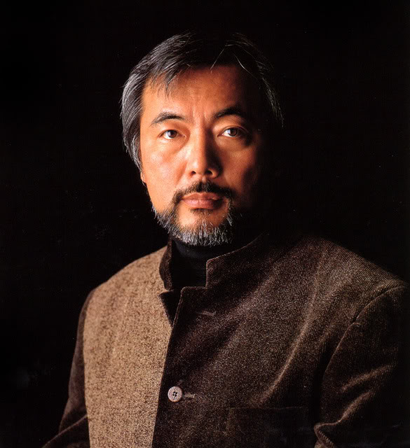
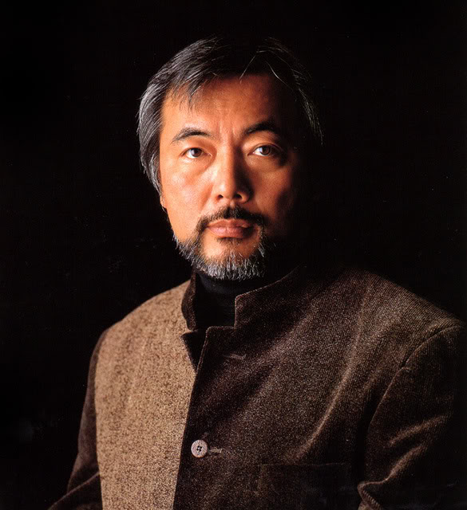

El Acuario Dulce
Introducción y fundamentos del acuario de agua tropical.
Al pensar en un acuario debemos tener claro que estamos hablando de imitar a la naturaleza creando un ecosistema donde trataremos de mantener especies con las mejores condiciones posibles y que ellas puedan interactuar en equilibrio. Generalmente muchas personas cuando comienzan en este hobby lo hacen para tener unos cuantos peces de colores adentro de una caja de vidrio con agua, pero el tema va mucho más allá. >>Más>>
Propósito del sitio
Del hobby a la ciencia de mantener peces de agua dulce en acuarios
«Quien tiene peces como mascota no es un acuariofilia. Quien se preocupa por la biología y la ecología de los peces y crea un ecosistema donde sólo son una parte de los organismos que viven en el acuario, sí lo es», explica el investigador Alberto Maceda Veiga, del Instituto de Investigación de la Biodiversidad de la Universidad de Barcelona (IRBio), y primer autor de un estudio publicado en la revista Fish and Fisheries que rompe tópicos sobre el mundo de la cría de los peces de agua dulce y destaca la importante labor de los acuaristas serios para estudiar y conservar la biodiversidad de los ecosistemas acuáticos. También son autores del estudio Omar Domínguez (Universidad Michoacana de San Nicolás de Hidalgo, México), José Escribano Alacid (Asociación Grupo de Investigación de Ecosistemas Acuáticos, agrio) y John Lyons (Universidad de Wisconsin, EEUU).
Takashi Amano
El maestro del acuarismo artístico y natural
Takashi Amano (1954-2015) -fotógrafo, diseñador y acuarista-, es sin duda uno de los nombres claves y máximos referentes del mundo del acuarismo o paisajismo acuático, aunque su trabajo y obra siempre ha ido más allá; interesado por el medio ambiente y la acción destructora que el ser humano ejerce sobre éste, ha querido dejar un legado de la amplia riqueza natural del mundo a través de sus fotografías, y especialmente de los últimos bosques vírgenes de su tierra natal, Japón. Fallecido en 2015, Takashi Amano fué capaz de transmitir la belleza, paz y serenidad del mundo acuático mediante la búsqueda del equilibrio a través de su amplia labor como acuarista, empleando para ello técnicas de la jardinería japonesa, la filosofía wabi-sabi y el zen, y promoviendo el desarrollo y creación de estos entornos naturales por medio del “Internacional Aquatic Plants Layout Contest”.
 

Mentores Nacionales
Amigos, referentes y pilares en nuestro grupo
En nuestro país tenemos muchos acuaristas, y algunos destacados.
Walter Vazquez, es un acuarista muy experimentado y que mayormente se dedica a la recreación de acuarios naturales, mejor llamados acuarios de Biotopo. Walter ha sabido ganar el 1° premio en el concurso BADC que para nosotros es como el mundial de fútbol. Por otro lado tenemos a Fabio Adragna, también con mucha experiencia y muchísmos años reproduciendo plantas y peces, uno de los pioneros en la confeccion de acuarios plantados en nuestro país. Puedes aprender de Fabio siguiendolo en su canal de youtube
Un poco de história...
Acuariofilia, una disciplina milenaria
La acuariofilia tiene un origen muy remoto y tenía varios objetivos: alimenticios, decorativos y religiosos. Hace más de 4.000 años, los sumerios ya contaban con estanques en los que mantenían los peces capturados en la naturaleza antes de consumirlos.
Estas prácticas continuaron en Europa durante la Edad Media, pero la verdadera evolución de la acuariofilia se produjo en Asia. Entre los siglos X y XIV aparecen las peceras de porcelana, que guardaban peces de colores que deslumbraron a los europeos a partir del siglo XVII.